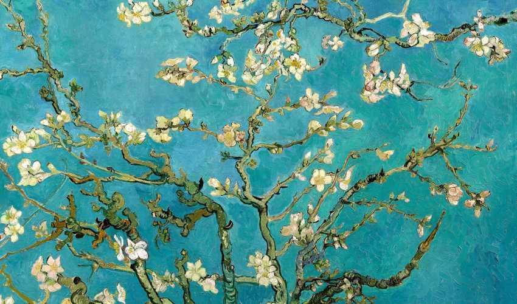
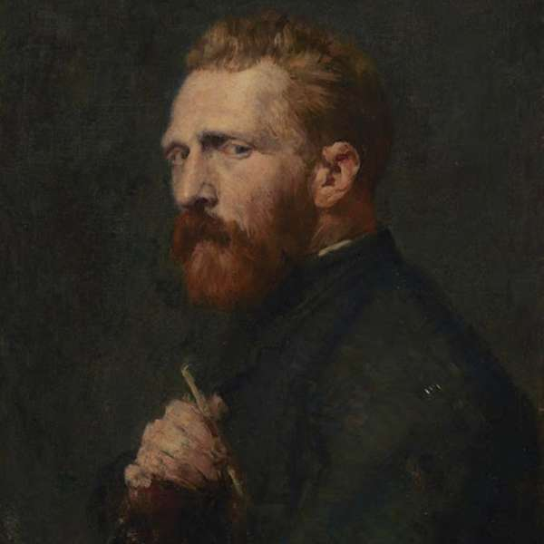

Conheça a obra!

Obra Amendoeira em flor está entre as que consideramos mais lindas. Muitas pessoas conhecem van Gogh pelas suas obras icônicas, como os Girassóis ou a noite estrelada, entre outros. Mas várias de suas telas tem lindas histórias e nos fazem encantar-se ainda mais por suas criações.
A obra Amendoeira em flor foi um presente de van Gogh ao seu irmão, Theo. Mais precisamente uma homenagem que van Gogh fez ao nascimento do filho de Theo no início de 1890.
Diante da emoção da notícia da chegada do seu sobrinho e ainda mais feliz com a iniciativa do irmão em lhe homenagear, dando seu nome ao filho, ele não teve dúvidas do seu desejo de presentear o bebê com uma de suas pinturas.
Vincent teve a ideia de pintar uma tela que representasse o começo de uma nova vida. E sua escolha foi justamente a amendoeira, com suas lindas flores que representa o renascer e o anúncio de que a primavera chegou.
A obra vislumbra os galhos em flor vistos de baixo, sob um céu lindamente azul e não poderia ter ficado mais perfeita. A única exigência ao irmão era de que a obra fosse colocada na parede em que o berço estava.
Assim o recém-chegado pequeno Vincent poderia olhar para cima e ver o lindo céu azul ornado com as lindas e delicadas flores da amendoeira.

Van Gogh
Vincent van Gogh (1853-1890) foi um importante pintor holandês, um dos maiores representantes do pós-impressionismo. Van Gogh morreu praticamente no anonimato, depois de uma vida atormentada que o levou ao isolamento e finalmente ao suicídio.
Com uma trajetória difícil, cheia de problemas emocionais, Van Gogh deixou uma obra comovente e vigorosa que se constitui em um dos maiores legados artísticos da humanidade.